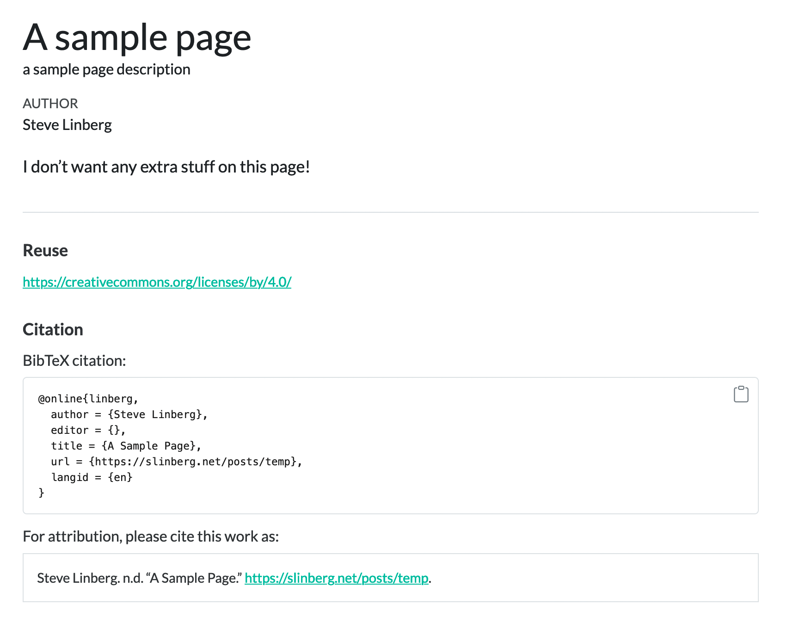
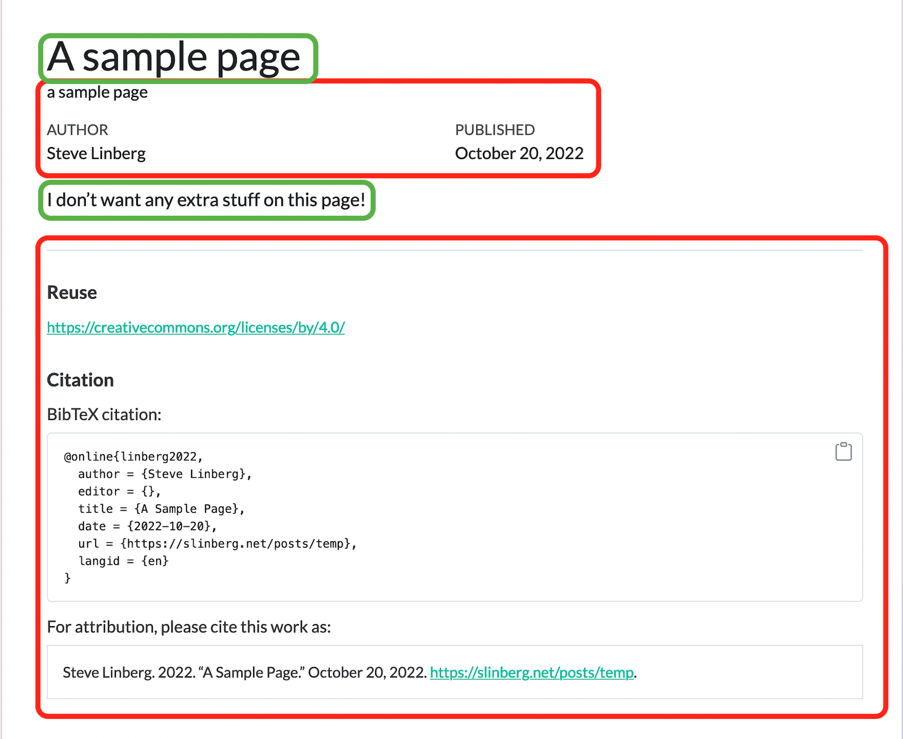
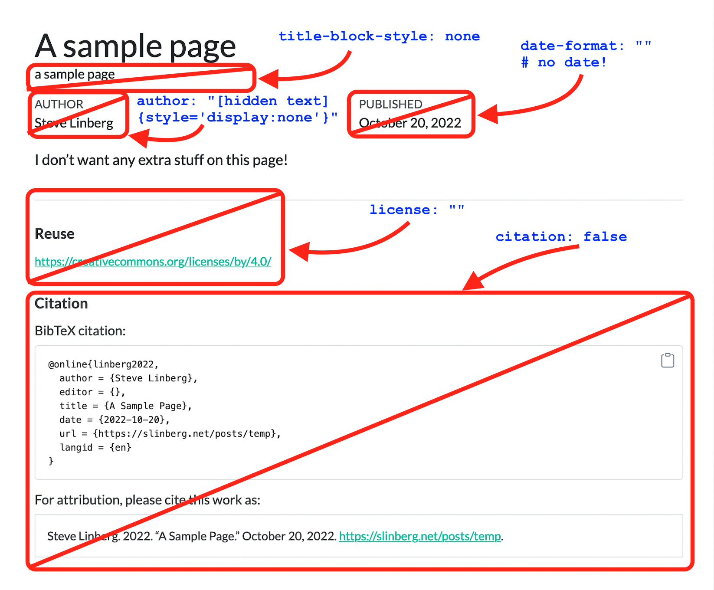
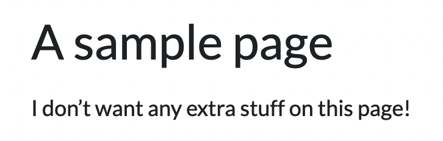

Porting to Quarto, part 2
A few more notes on the Quarto transition
Here are a few more notes and tips on the transition to Quarto, for other folks who may be grappling with it as well. You might reference part one as well.
Site structure and categories
This site is (presently) a mix of 3 general categories of content:
- Static, once-off pages like About or the front page
- Time-oriented narrative pages: the blog
- Academic stuff that is sort of in between, having chronology but usually a bit more substantive than blog posts, which can be short and more stream-of-consciousness
There’s no real technical distinction between a blog post and a static page, except that Quarto includes functionality for grouping and listing blog posts by using various metadata added in posts’ YAML headers. One of the differences, though, is that blog posts can have categories; standard pages can’t. For this reason, I decided to treat the academic content as blog posts, to inherit the category functionality, but I wanted to keep them distinct from the blog section itself.
I spent a lot of time trying to solve the following problem, and have just come to the conclusion that I can’t. This happened in Distill, and was part of my motivation for moving to Quarto, and it turns out it’s the same situation in Quarto:
I liked the idea of having categories on posts and pages on the site, as a non-hierarchical form of organization.1 Basically, I assumed categories were tags, metadata that could be arbitrarily attached to content in various forms and places, and then used to navigate the site in other ways.
That’s not quite how it works. In Quarto, categories are metadata attached to documents, and they are only accessible from listing pages, like the blog page or the academics page. There isn’t a way to search a site for categories, and categories don’t cross-pollenate across sections (i.e. categories defined in blog posts won’t be accessible in listings for academics, and vice versa).
I spent a lot of time trying to find a workaround for this, and up until this morning I thought I was close. I made “academics” a subdirectory of “posts”, and did some gymnastics to keep the separate listing pages from combining the listings. I got all of that working, but in the end I noticed that the category clouds for the listing pages only consisted of the categories for the content it was showing, not all of the categories defined in the site.
So, I realized it’s just not going to work, and backed the academics page out of /posts and made it a parallel top-level structure. A lot of wasted time. Sigh.
We’ve come this far, though, so we’re committed now, and overall Quarto does feel cleaner and less reliant on hidden CLI voodoo than Distill. So we’ll just add a couple more notes and call it done.
Suppressing stuff on blog pages
When you make a blog post, you get a lot of additional stuff by default that is usually good, but which you may not always want.
In my initial attempt to solve the above problem, I had a directory structure like this for the academics section:
academics/
academics/_metadata.yml
academics/index.qmd
academics/695M/
academics/697E/The file index.qmd was the listing page for the academics section, but it was treated as a blog post because it was inside the academics directory being listed. This meant that it inherited blog post things like author name, post date, citation information, license information, etc. That was fine for posts, but I didn’t want it all on this particular page.
Turning it all off took some doing, but the following fields in the YAML header did it:
| attribute | value | effect |
|---|---|---|
citation |
false |
suppress the BibTex citation block at the bottom of the page |
license |
"" |
suppress the “Reuse” header and license information. |
title-block-style |
none |
turn off some of the header block information, but we still also need: |
date-format |
"" |
supress the date header; also be sure NOT to have date in the header, or it will still be echoed |
author |
"[hidden text]{style='display:none'}" |
the yuckiest hack of all; author can’t be blank, so the only thing we can do is put it in a <span> and use CSS to hide it. |
The raw code is:
citation: false
license: ""
title-block-style: none
date-format: ""
author: "[hidden text]{style='display:none'}"For a visual reference, if we create a simple page like this:
---
title: "A sample page"
description: |
a sample page description
---
I don't want any extra stuff on this page!It will render like this:

For a blog post, maybe that’s fine, but for an index page or something else, we might only want the title and body, shown in green, and not the stuff in red:

The attributes listed above will remove this:

Leaving us with this:

Aaaahhhhh.
Redirecting from previous URLs
We said that back in 1998. Did anybody listen? Not really. Do any of your 25-year-old URLs still work like that one does? I doubt it. My point.
When you migrate your site, URLs are going to break. If you want bookmarks - or google results - to find their way to the pages that got moved around, instead of dropping your confused readers on your cute 404 page, you need to leave pointers from your old URLs to your new ones.
This can be a daunting project, depending on how many URLs you need to update, and there are several ways to do it. The best way involves having some control over the webserver that’s hosting your site, such as server-side rewrite rules or .htaccess files, because that doesn’t depend on the viewer’s browser to handle the issue that is really a server issue.
However, if you’re hosting somewhere where you don’t have that kind of control, the next-best way is to use aliases in the YAML header. It won’t work in all cases, but it’s a lot better than nothing.
So, for example, due to differences in the way the Quarto and Distill versions of this site were built, the academics listing page was at this address:
https://slinberg.net/academics_list.html
And it is now:
https://slinberg.net/academics.html
However, if you follow the old link, you’ll see that it still brings you to the right place. This is done with this in the header:
aliases:
- "academics_list.html"What this actually does is tell Quarto to generate a file called academics_list.html, which contains a redirect to academics.html. This pollutes your directory a bit, and means you have to overlay the old directory structure into your current one, so it’s not ideal from a neatness perspective. However, it will work well enough in most cases.
So that’s a wrap on the migration process. Other Quarto goodness will follow as I uncover it.
Footnotes
I’m all about hierarchies, as I date from the very first days of the web when all sites were static, before server-side or client-side processing, and websites were nice, neat hierarchical cascades of directories, images and HTML pages. That’s still my mental concept for websites, even though it’s not strictly necessary anymore.↩︎
Reuse
Citation
@online{linberg2022,
author = {Steve Linberg},
title = {Porting to {Quarto,} Part 2},
date = {2022-10-20},
url = {https://slinberg.net/posts/2022-10-20_distill_to_quarto_part_2},
langid = {en}
}